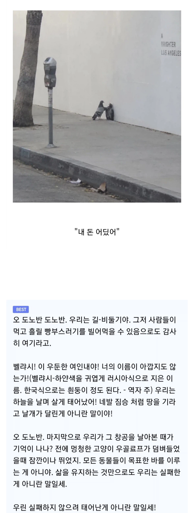
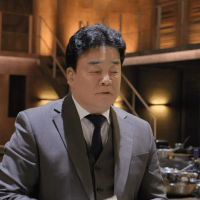

https://bbs.ruliweb.com/best/board/300143/read/76643345

https://bbs.ruliweb.com/best/board/300143/read/76643345

이건 오마주
https://www.dogdrip.net/634548574
와 잘읽혀
우린 살아남기 위해서 살아남고 있는거야.
그게 다야.
죽겠다
번역자 내주가 진짜네 ㅋㅋ
우린 실패하지 않으려 태어난게 아니라는게 멋지네 캬
ㅋㅋㅋ 죄와벌 읽는 기분이네
쑤~갓
이제 자식이 없던 퇴역장군 친척의 부고 소식과 함께 변호인이 찾아와 2만 루블의 유산이 상속될 예정이라 말하는데...
길-비둘기 ㅋㅋㅋ
감비노가 널 팔았어
우린 벌 받기 위해 사는게 아니란 말이오!!
역주 박혀있는게 ㄹㅇ
주석이 찐이네 ㅋㅋㅋㅋㅋ
길-비둘기 이지랄 ㅋㅋㅋㅋㅋㅋ
고양이 우골료프 시벌 ㅋㅋㅋㅋ 존나 근본있어보이네
도노반은 켈트식 벨랴시는 슬라브어계쪽인데 읽다보면 위화감드네
서울의달
저 러시아 문학 특유의 격정적 독백과 파토스가 일품이네ㅋㅋ
문과도 존중받아야된다 ㅋㅋㅋ

조금 아쉽네
니꼬 마이 커즌
전에 그 쥐랑 똑같은 형식인데 길-비둘기나 역자주 등 번역본 구현에서 가산점 들어가네ㅋㅋㅋ
쥐새끼버전도 있었는데